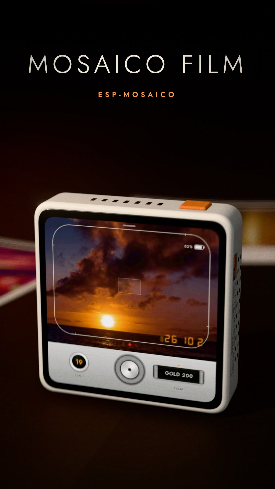
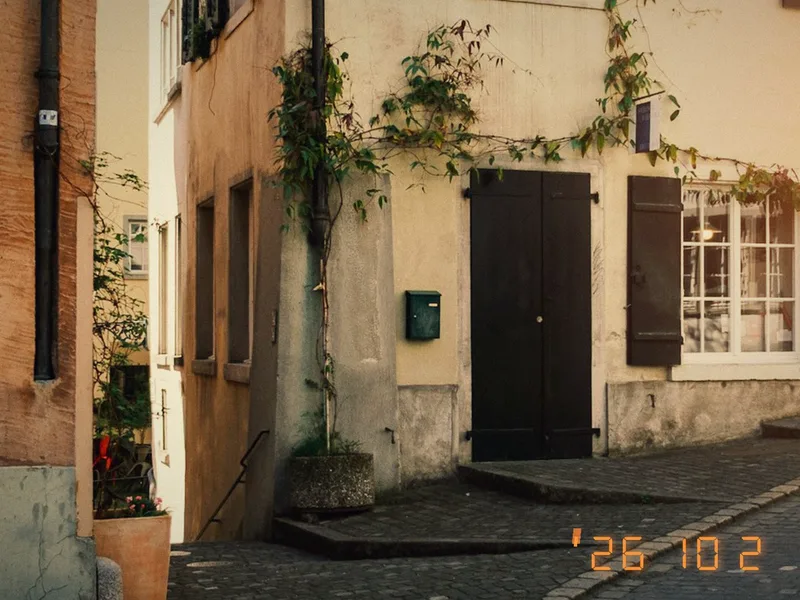

01
取景与拍摄
4:3 或方形实时取景，曝光补偿、日期戳，以及机身红色实体快门。
ESP-MOSAICO · 相机应用
用经典相机取景，按下快门，看曲线、颗粒与光线在设备里变成一张照片。
已上线 Mosaico Ideas · 浏览器直接烧录

01 / 3630 秒 · 一卷完整旅程
机身、胶卷拨轮、快门、冲洗、重洗与发送到手机——真实界面记录，统一在暗房语言里呈现。
完整流程
4:3 或方形实时取景，曝光补偿、日期戳，以及机身红色实体快门。
裁切、转正、调色、红晕、暗角与颗粒，再将全尺寸 JPEG 写入 NAND。
原片留在相册里。转动滚筒换一卷胶片，再生成一个新的版本。
选择照片并扫描会话二维码，通过当前 Wi‑Fi 或相机临时热点下载，无需配套 App。
八卷胶片
每一种效果都是可复现的 C 冲洗管线，而不是 LUT：曲线、颜色、红晕、暗角、漏光与颗粒都在设备上合成。

暖金色调、饱满日光与柔和颗粒。
两种相机体验
4:3 取景、胶卷计数、曝光拨轮与连续拍摄。
方形取景、相纸排版与机械拨杆触感。
相机名称与商标归各自权利人所有；Mosaico Film 为独立项目，与其无关联。
像相机一样构建
同一套界面、胶片管线与交互模型同时运行在 PC 预览和 ESP32-S31 上，硬件能力只通过一个明确的端口接入。
曲线、分离色调、红晕、暗角、漏光与颗粒，在本地逐层合成。
取景、冲洗、JPEG 编码与 NAND 写入通过明确所有权的队列和事件分工。
滤镜、暗房、相册和完整 UI 脚本都能编译为普通 C11 测试目标。
System Update 保留 Vibe Mode 固定前缀，同时交付应用与素材镜像。